Body horror (боди хоррор) — это поджанр, в котором источником ужаса становится само человеческое тело: его трансформация, разложение, нарушение целостности или слияние с чем‑то чужеродным. Это самый интимный из всех видов хоррора, потому что от него нельзя сбежать — тело всегда с тобой. Философ Жюлия Кристева описала эту реакцию через концепцию «абъекции»: отвращение к телесным выделениям, мутациям и распаду связано с тем, что они стирают границу между «я» и «не-я», между живым и мёртвым. Именно поэтому body horror работает на уровне, недоступном рациональному контролю: это не страх перед монстром снаружи, а страх перед тем, что монстр — ты сам.
Литературные корни body horror уходят глубже, чем принято считать. Мэри Шелли в «Франкенштейне» (1818) создала первый развёрнутый нарратив о теле как сборной конструкции — существо доктора Франкенштейна пугает не злом, а самим фактом своей сшитости из чужих частей. Роберт Луис Стивенсон в «Докторе Джекилле и мистере Хайде» (1886) сделал следующий шаг: трансформация тела как симптом раздвоения личности. Кинематограф подхватил эту традицию в эпоху Лона Чейни-старшего, который в 1920-х физически истязал собственное тело ради ролей — надевал протезы, деформирующие суставы, часами работал в болезненных конструкциях. Чейни понял раньше всех: публика боится не грима, а боли за ним.
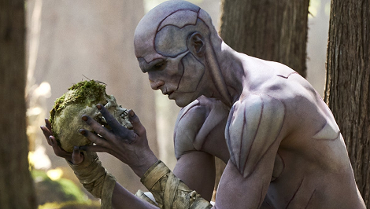
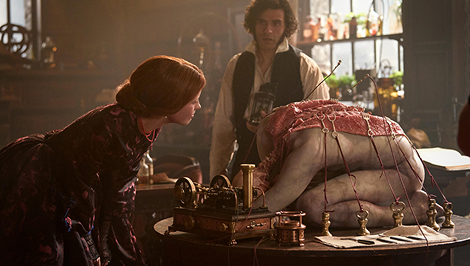
Ридли Скотт и Х.Р. Гигер создали новый язык телесного ужаса. Ксеноморф устроен как инверсия человеческой анатомии: фаллические формы, рёбра наружу, две пасти вместо одной, кислота вместо крови. Но настоящий body horror «Чужого» — это не сам монстр, а сцена с грудным чужим. Тело капитана Кейна становится инкубатором для существа, которое прорывается изнутри — это нарушение самого фундаментального телесного табу: неприкосновенности внутреннего пространства тела. Гигер намеренно проектировал все элементы «Чужого» на стыке сексуального и смертоносного, превращая биологические функции в орудия убийства. Сиквел Джеймса Кэмерона (1986) с Рипли в экзоскелете и финальным противостоянием Королевы добавил ещё один слой: женское тело как арена войны за право на материнство — чужое против человеческого.
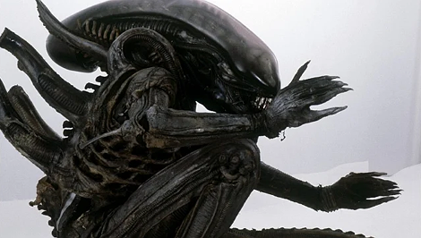
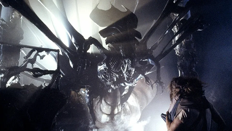
Дэвид Кроненберг — главный теоретик и практик body horror в кино. Его «Муха» (1986), «Видеодром» (1983) и «Голый завтрак» (1991) объединяет единая идея, которую режиссёр сам назвал «новой плотью»: технология и плоть сливаются в единое целое, и это слияние не катастрофа, а эволюция — пусть и невыносимо болезненная. В «Мухе» учёный Сет Брандл медленно превращается в гибрид человека и насекомого — и Кроненберг снимает этот процесс как хронику тяжёлой болезни: стадии, отрицание, принятие, финальный распад. Критики справедливо читали «Муху» как метафору СПИДа — эпидемии, которая в 1986 году уже вовсю уничтожала поколение. «Видеодром» идёт дальше: тело главного героя буквально поглощает видеокассеты, в животе открывается щель-приёмник — Кроненберг предсказал боди-хоррор цифровой эпохи за тридцать лет до её наступления.
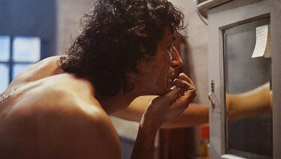
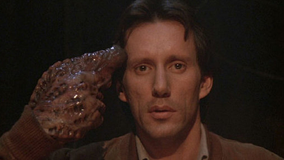
Джон Карпентер в «Нечто» использовал body horror как инструмент параноидального нарратива. Пришелец не просто трансформирует тело — он копирует его, делая оригинал и копию неотличимыми. Специалист по спецэффектам Роб Боттин создал визуальный язык, которого не существовало до него: тела разворачивались, сращивались, отращивали конечности, превращали голову в паука. Принципиально важно, что все эти трансформации — практические спецэффекты, никакой компьютерной графики. Физическая реальность материала — латекс, желатин, механические конструкции — давала ощущение подлинной органики, которое CGI редко достигает и сегодня. «Нечто» поставило главный вопрос body horror: если тело изменилось — ты ещё ты?
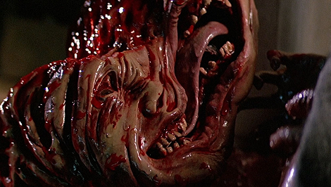
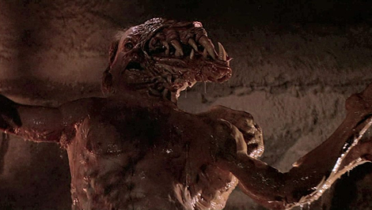
В 2000-х французские режиссёры — Паскаль Ложье («Мученицы», 2008), Александр Ажа («Скалолазка», 2003), Жюли Леспинасс — радикально изменили регистр жанра. «Мученицы» — возможно, самый жёсткий body horror в истории мейнстримного кино: тело подвергается систематическому уничтожению не ради монстра и не ради сюжета, а как философский эксперимент — что произойдёт с личностью, если разрушить её физическую оболочку до предела. Это был сознательный отказ от метафоры: новая французская волна хоррора говорила напрямую, без аллегорий, и именно эта прямота оказалась невыносимой для критиков и зрителей, воспитанных на символическом языке Кроненберга.
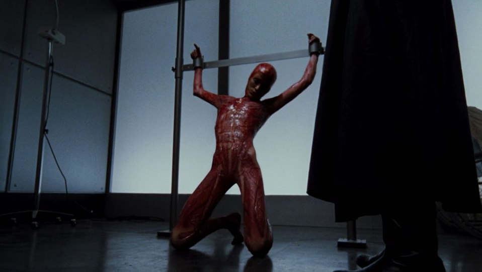
Dead Space сделала то, чего не решалась сделать ни одна игра до неё — превратила body horror в игровую механику буквально. Некроморфы — мутировавшие трупы, поднятые инопланетным артефактом — устроены так, что убить их привычным способом невозможно: стрелять нужно не в голову и не в корпус, а отстреливать конечности. Это не просто геймплейная особенность — это философское высказывание. Игрок вынужден методично расчленять тела, которые когда‑то были людьми, и именно этот процесс является основным действием игры. Висцеральные Games поставили игрока не в позицию наблюдателя телесного ужаса, а в позицию его непосредственного участника.
Некроморфы визуально выстроены по принципу «узнавания через искажение»: в каждом из них ещё читается человеческий силуэт — рёбра, позвоночник, конечности — но всё это вывернуто, переставлено и дополнено новыми органами атаки. Это та же «зловещая долина», что и в случае с куклами, только доведённая до анатомического предела. Художники студии намеренно изучали реальные патологии — некроз, акромегалию, слияние костей — чтобы каждый тип некроморфа выглядел как правдоподобная биологическая катастрофа, а не фантазия. Dead Space доказала: в интерактивном формате body horror работает страшнее, чем в кино — потому что ты не смотришь на расчленение, ты его совершаешь.
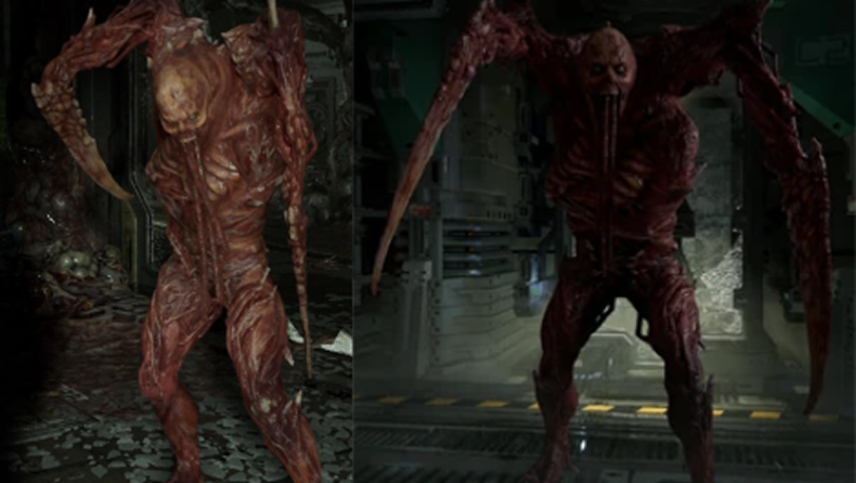
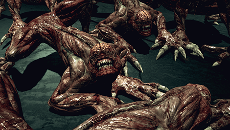
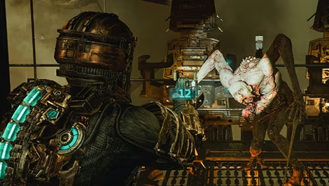
«Аннигиляция» Алекса Гарленда (2018) вернула жанру интеллектуальное измерение: тела персонажей в Зоне Икс мутируют согласно собственной внутренней логике — человек прорастает цветами, превращается в дерево, теряет границы биологического вида. Это body horror эпохи генной инженерии и трансгуманизма: страх не перед внешним вторжением, а перед тем, что само определение «человека» нестабильно. «Субстанция» Корали Фаржа (2024) закрыла цикл, начатый Кроненбергом: тело женщины в медийную эпоху разделяется на «оригинал» и «улучшенную версию» — и этот раздел уничтожает обе. Лучший современный body horror работает там, где биология встречается с идентичностью: он пугает не тем, что тело можно разрушить, а тем, что оно никогда не было полностью твоим.
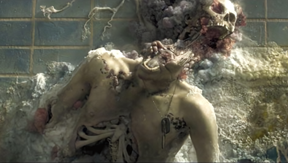
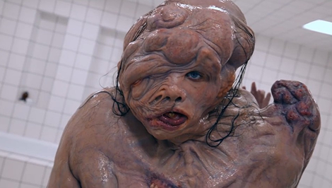
Body horror пережил почти двести лет — от сшитого чудовища Шелли до раздвоившегося тела в «Субстанции» — и всё это время говорил об одном: тело никогда не было нашей собственностью. Оно болеет, мутирует, стареет, предаёт и в конечном счёте разрушается вне зависимости от нашей воли. Жанр просто делает этот факт невозможно видимым.
Лучшие образцы — Кроненберг, Карпентер, Гарленд — используют телесный ужас не как самоцель, а как линзу: через деформацию плоти они говорят о болезни, о технологии, о идентичности, о том, где заканчивается человек и начинается что‑то другое. Французская жестокость сорвала с этого разговора последние метафоры и заговорила в открытую — и стало только страшнее.
В конце концов, body horror пугает честнее любого другого поджанра. Монстра можно не встретить. Призрак может обойти стороной. Тело — никуда не денется.